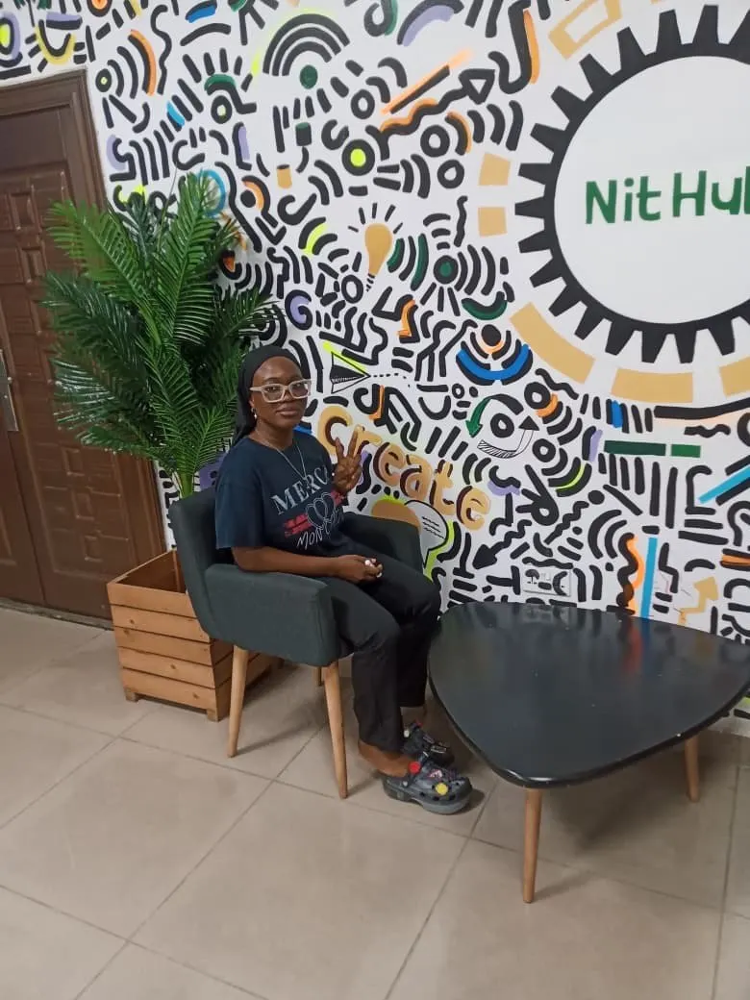
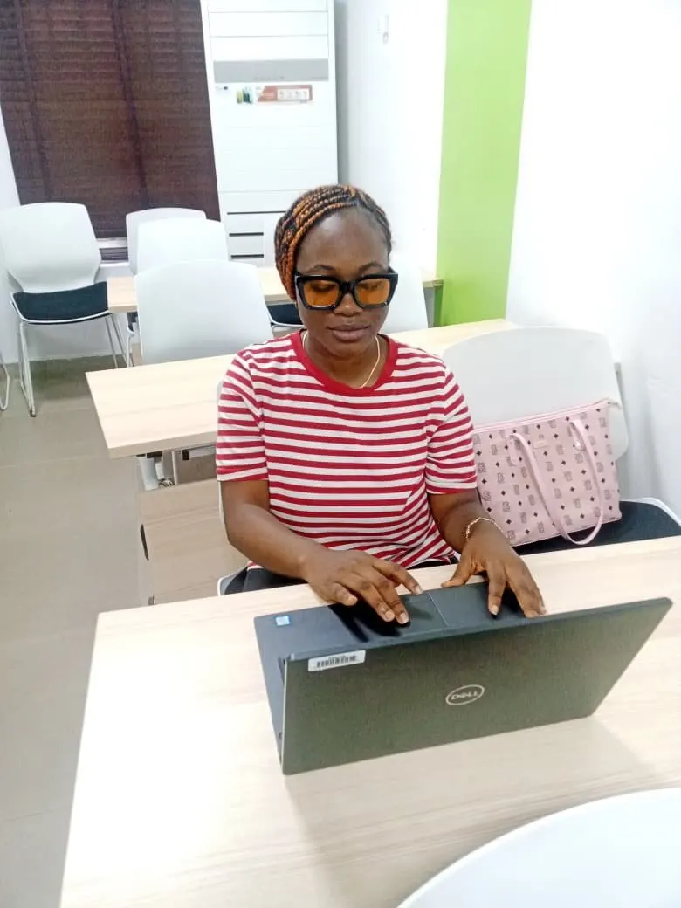
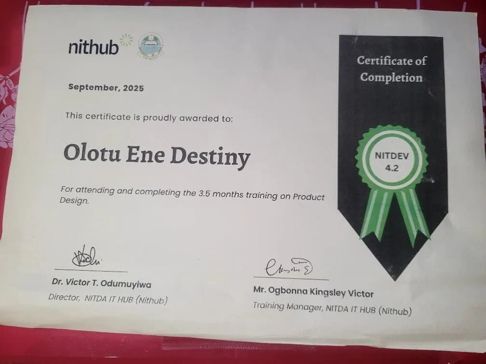

Before joining LIFT, I had the passion and the drive, but I lacked the means and the resources to actualize my passion.
I was fascinated by technology and design, but pursuing Product Design seemed like an uphill task that required proper tools, guidance, and opportunities.
However, the chance to enroll for the NITHUB Product Design program through LIFT came.
This chance became my turning point.
In the NITHUB Product Design program, I was not only taught how to create beautiful screens; I was taught to think of the person behind the screen; to empathize with their problem and solve it using design thinking methods.

I got to work on live projects, collaborate with people, receive constructive feedback and slowly start seeing myself in a different light.
One of the turning points for me in my life was when I got my first laptop through LIFT.
The laptop meant a lot more than just being a piece of equipment to me.
I could practice what I was learning. I could open up Figma and start creating. I could engage with projects, experiment, fail, succeed, and keep learning beyond the class walls.

I moved from someone who was interested in Product Design to someone who can say:
“I am a Product Designer.”
I successfully finished my studies, got my certificate, worked on projects like Remedi and TaxIQ, built my portfolio, and started getting professional opportunities.

In hindsight, the main thing that changed wasn’t just the skills that I developed.
The main thing was the confidence.
LIFT has given me an opportunity to transform my curiosity into a profession.
Now, I am still learning, creating, and growing as a designer. However, I am sure that I am not where I started anymore.
Every time I sit down in front of my laptop, I think about how an opportunity can change someone’s story for good.
This is just the beginning.
Olotu Ene Destiny